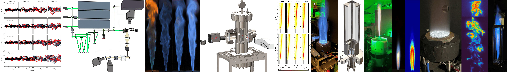

I am a Research Fellow at the Clean Energy Research Platform (CERP), King Abdullah University of Science and Technology (KAUST), where I work on atmospheric and high-pressure combustion leveraging advanced laser diagnostics.
Research Interests
Aerospace Propulsion, Reactive Flows, Fluid Dynamics, Laser Diagnostics, Scientific Computing
Education
- Ph.D., Mechanical Engineering, King Abdullah University of Science and Technology (KAUST), 2026
Thesis: Oxy-fuel combustion: An experimental investigation of non-premixed jet flame structure
Advisors: Gaetano MAGNOTTI & Hong G. IM - M.Sc., Space and Astronautical Engineering, La Sapienza University of Rome, 2020
Thesis: Turbulent mixing of transcritical jets with Direct Numerical Simulation
Advisors: Francesco CRETA & Pasquale Eduardo LAPENNA - B.Tech., Aerospace Engineering, SRM University, 2017